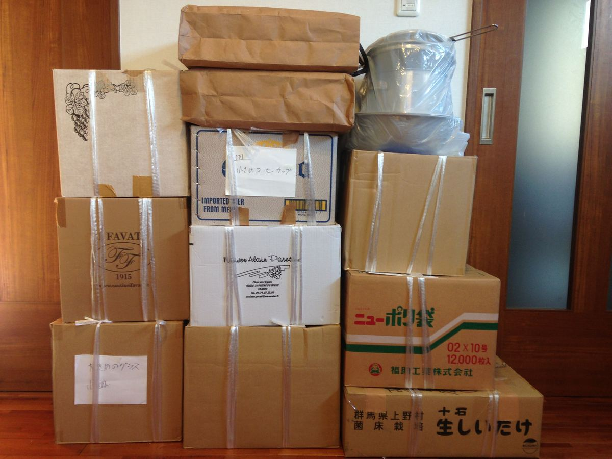
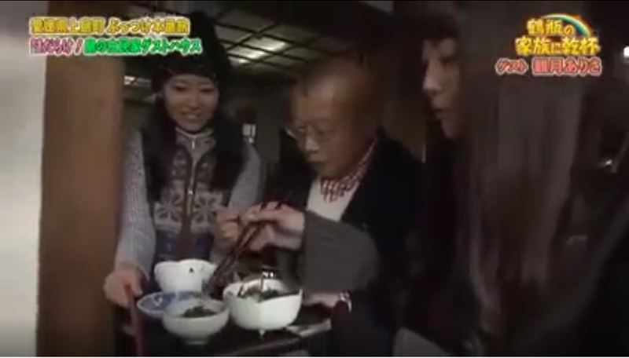

古民家再生の記録
頂きもの① 食器・布団
汐見は頂きものの多い宿です。
食器、布団、水屋、タオル類、テーブル、薪や海山の幸まで。
開業前も開業後も、たくさんの方から助けて頂き、心を寄せて頂いています。
ひとつひとつに人との会話があり、感謝のやりとりがありました。
１．食器
佐島を訪れて、汐見の処分に迷い始めた頃から、ノブコは唯一行きつけのワインバーでときどき愚痴をこぼしていました。
「大事にしてくれる人になら譲りたいんだけど。マスター、古民家買わない？」
無茶ぶりも良いところです。
話が二転三転し、自分でリノベに踏み出し、島通いが始まり、資金調達はじめ色々な事で悩んだことも、何かとぐちぐち聞いて貰っていました。
そして漸く開業が見えて来て、食器やリネンなどの調達を考え始めた時に、さらりとマスターから言われました。
「昔、レストランをしていた頃の食器を捨てられずに取ってあるから、全部持って行ってよ。」
言葉もありません。

2．お布団
綿布団が懐かしい、と言われます。
汐見の敷・掛布団はだいたい頂きものか、その打ち直しです。
お盆や正月に可愛い孫や子供を迎えるためにたくさん置いてあったお布団を、少しずつ手放すおうちがあり、有難く使わせて頂いています。
嫁入り道具のようなお目出たい柄もあり、瀬戸の花嫁だったのかも～と想像が膨らみます。
晴れれば毎日庭で干すお布団は、お日様の匂いがします。
ご紹介したいものは他にも沢山あり、割愛させて頂くのが恐縮です。
いつもいつも、本当に有難うございます。
【追記】
冒頭の食器が2017年4月にNHK「鶴瓶の家族に乾杯」で放映された時に写り込み、マスターとママに喜んで頂きました。
